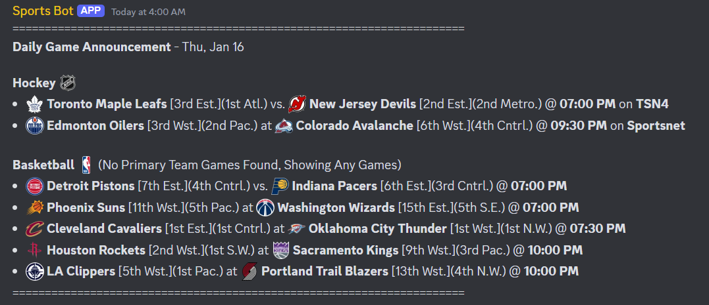

Discord Sports Bot --- Link to Github Repo available upon request (due to some sensitive info in there)
- This is a Python-based Discord bot that gathers and announces sports game information (such as schedules, scores, live game data, and standings) using various sports APIs (e.g., NHL-API, NBA-API). The data being handled is usually in the form of JSONs, which are being both read and written to.
- It uses discord.py and asyncio for asynchronous programming to handle live real-time data (such as sending messages based on the live game state), commands from users, and scheduled announcements.
- It can also use the Py library Selenium to automatically find and stream a sports game's broadcast (on, for example, Sportsnet or TSN) to a discord channel. The program can navigate website, log in, and activate a stream to the discord channel of either a game that is starting soon or a game that a user requests via a command.
- Currently, the Bot can handle NHL, NBA, NFL, and MLB games.
Example Announcement Message:

- A static website built from scratch to host video game guides, using HTML, CSS, and JavaScript.
- I use GitHub for version control and deploy the website using GitHub Pages.
- On some pages of the website, there are interactable widgets used to help a user solve in-game puzzles. These are programmed using JS.
- The project is partially open-source, with some guides being written by other people, but the coding of the website is all done by me.
Here is one of the interactable puzzle solvers:
- One image per row can be clicked to be selected and clicked again to be unselected. Once one image in each row is selected, the solver will automatically process which pictures were clicked and return the necessary code to solve the puzzle.